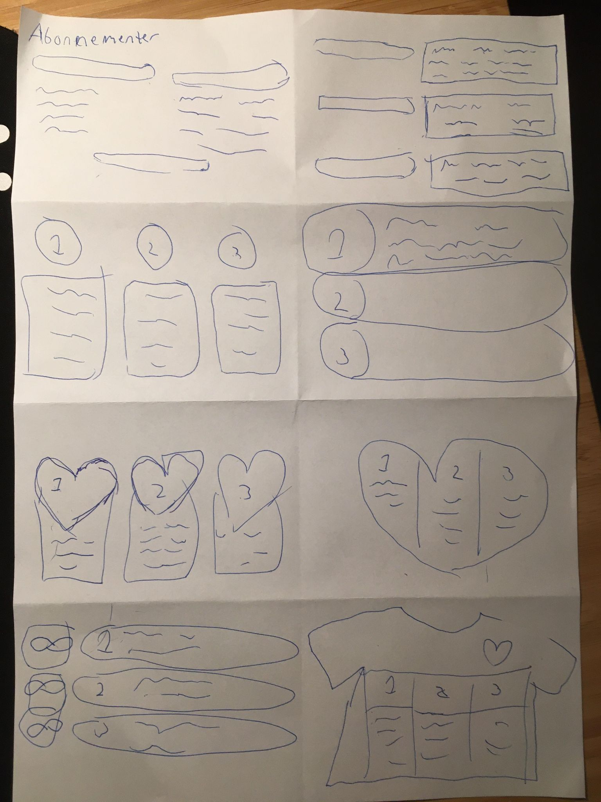
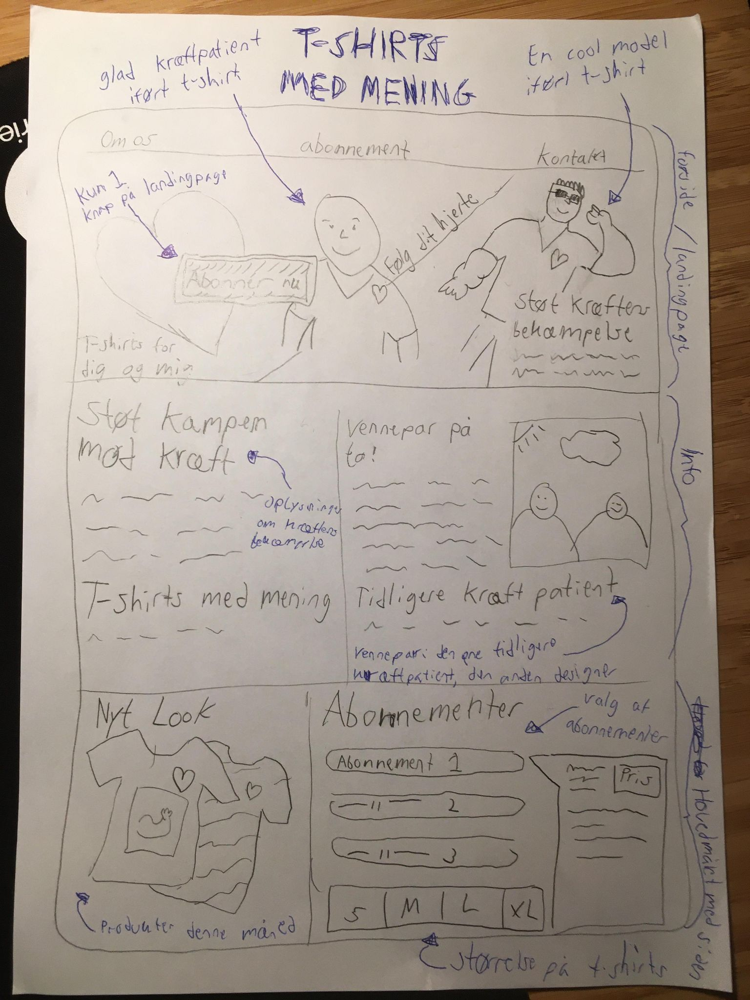

Multimediedesigner
Grundlæggende UX
(1/3) Idé
Projekt type: UX research / idégenerering
Værktøjer: MS Word / Adobe XD / Research / Sketches
Individuel/gruppe opgave: Individuel
Opgaveformulering
I denne opgave skulle man på baggrund af sin research, behandlingen af den og de indsigter, som man er kommet frem til, lave de indledende tanker til et udkast til en idé i forhold til salg af t-shirts online. Skulle afleveres i PDF-formatat.
Krav
- Emne for ens idé / shop
- Udfordringer / problemstilinger / USP ved e-handel / webshops
- Databehandling af indsigter
- Liste af inspirationskilder (lightning demos)
- Sketches (Ideas, Crazy 8s og solution sketch)
Overblik af opgaven
Dette tema var opdelt i tre faser. Første fase gik hovedsageligt ud på, at man skulle få kendskab til diverse UX-metoder, for at opnå en god baggrundsviden forud for ens produkt. Research består af følgende fire typer: desk, observation, interview - og survey research.
Research handler om at opnå viden om og skabe sammenhæng mellem forretningen, kunden og konkurrenter, så man kan få bekræftet/afkræftet eventuelle hypoteser, man kunne have om målgruppen.
Afleveringen:
De fire forskellige researchmetoder blev anvendt, for at indsamle reelle data om og indsigt i, hvad og hvorfor brugere gør som de gør, i forhold til salg af t-shirts på webshops. Anvendelsen af UX-research hjalp med at komme frem til en reel idé, og gav et indblik i den ønskede målgruppe, produkt og afsender. Fra desk -og observations research spillede f.eks. brugervenlig navigationsmenu en vigtig rolle, da det er noget der fører folk gennem siden, og hjælper dem med at finde frem til det de søger. Et andet eksempel fra interview - og survey research, var at retur-processen ikke altid er optimal, og at det ville være en god idé at have fokus på dette område. Dette var altså vigtigt, da det netop gav en god baggrundsviden forud for ens produkt, og heraf give bedre resultat, end hvis research-metoderne ikke blev anvendt.
Dernæst blev de første tanker til løsningen af casens problemstilling udformet. Dette blev gjort vha. forskellige øvelser, som Lightning Demos og Sketch, som havde en stor indflydelse på de endelige beslutninger inden arbejdet med selve prototypen.
Ideas:
Crazy 8s:
Solution sketch:
(2/3) Endelig prototype
Projekt type: Prototype / Wireframe
Værktøjer: Adobe XD / Five-act interview
Individuel/gruppe opgave: Individuel
Opgaveformulering
I denne opgave skulle man optimere sin prototype, ud fra de brugertest (five-act interview) man fik lavet og de insights man opnåede.
Krav
- Færdig forside
- Mindst 4 andre sider
- Gøre brug af UI-kits, UI-patterns, samt transitions
Overblik af opgaven
Den anden fase ud af i alt tre på dette tema, tog fat i indholdsproduktion med fokus på copywriting, herunder copy - og microcopy, samt gennem viden om UI-konventioner, prototyping og testing.
Ligeledes fik man kendskab til erhvervets centralt anvendte teknologier til produktion af digitalt indhold, såsom protyping i Adobe XD, herunder anvendelse af UI-kits og patterns.
På baggrund af de endelige skitser og indholdsproduktion, herunder også implementering af den visuelle stil, som blev fastlagt i ens style-tile, blev den første prototype skabt.
Moodboard og style-tile af første prototype:
Wireframe af første prototype:
Nu var næste skridt test-fasen, hvor prototypen blev testet ved "five-act-interview". Fra denne "learn-fase" kom der helt nye indsigter i spil. Resultaterne heraf viste, at stilen gav et forkert udtryk, og at fokuset mest var på kræftens bekæmpelse i stedet for salg af t-shirts. Noget skulle laves helt om. Efterfølgende blev den endelige prototype skabt med fokus på de nye indsigter, hvilket blev til et meget bedre resultat. Derfor kan det konkluderes, at prototyper og testresultater heraf er en vigtig proces for at finde frem til det, brugerne / interessenterne ønsker.
NB! Grundet tidspreds blev endelig prototype ikke helt færdig.
(3/3) Pitch
Projekt type: Fremlæggelse / Præsentation af prototype / Feedback
Værktøjer: MS PowerPoint / MS Teams / Adobe XD
Individuel/gruppe opgave: Individuel
Opgaveformulering
I denne opgave skulle man pitche / præsentere sin prototype. Præsentationen skulle bestå af tre overordnede dele: UX-research, UX/UI-design og UX-test.
Krav
- 5 minutter til pitch
- 5 minutter til at udfylde feedback-ark
- 10 minutter til diskussion
- Skulle være online (MS Teams)
Proces
Sidste del af de tre faser på dette tema gik hovedsagligt ud på, at formidle sine research og testresultater for interessenter, og fungerede som en slags hale/konklusion på hele temaet.
Heraf blev man introduceret til NABC-præsentationsteknikken, og til slut skulle man pitche foran sin studiegruppe, hvor man herefter gav hinanden feedback på selve præsentationen og løsningen generelt.
PowerPoint fra pitch:
Feedback af pitch:
NABC-præsentationsteknikken blev anvendt til egen pitch, og det var med til at pitche ens løsninger, proces og produkt på en professionel måde, samt at formidle udviklingsprocessen for digitalt indholdsproduktion til interessenter med faglig indsigt. NABC-modellen hjalp med at prioritere og strukturere ens materiale, samt overbevise interessenter om værdien af det, man har udviklet. NABC et godt redskab, da den sætter fokus på værdi for slutbrugerne, hvilket er vigtigt i dette feldt.